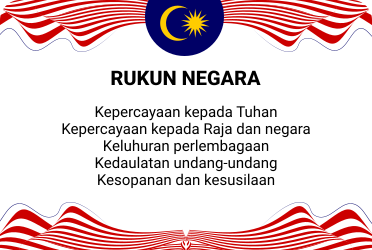
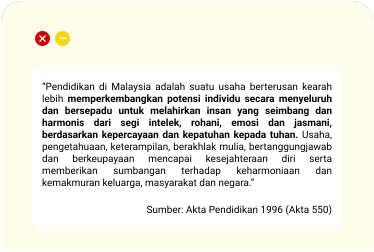
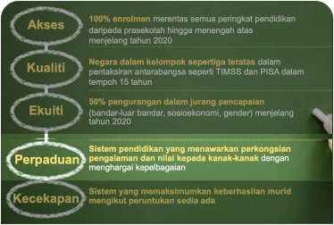
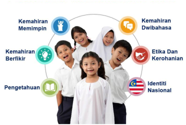

Verbal Linguistik
- Menggunakan bahasa dengan efektif sama ada secara lisan atau bertulis.
- Gemar meluahkan perasaan secara verbal dan berkemahiran meluahkan idea dalam penulisan.
Naturalis
- Mudah tertarik dan peka dengan alam semulajadi.
- Mengenali dan mengklasifikasikan flora, fauna dan galian dengan mudah.
- Gemar menghabiskan masa di luar dan mendengar bunyi- bunyian yang terdapat dalam alam sekitar.
Visual Ruang
- Berfikir secara gambaran, imej, bentuk dan corak.
- Mengingat dan menterjemahkan gambaran mental tersebut ke dalam hasil kerja fizikal (lakaran, lukisan, model, grafik).
- Menghubung kait di antara objek dan ruang.
Muzik
- Berfikir dalam bentuk muzikal.
- Peka dengan bunyi di persekitaran termasuk melodi dan nada.
- Memadankan perasaan kepada muzik dan ritma serta boleh menyanyi, bersenandung dan bergerak mengikut rentak muzik berlainan.
Kinestetik
- Menggunakan sebahagian atau keseluruhan anggota badan untuk berkomunikasi dan menyelesaikan masalah (sukan, menari, gimrama, lakonan dan aktiviti manipulatif) mengawal dan mahir mengimbangi pergerakan tubuh dan objek yang melibatkan kecekapan motor halus dan motor kasar.
Logik Matematik
- Menaakul secara deduktif dan induktif serta berfikir secara konseptual dan abstrak.
- Menggunakan simbol untuk mewakili idea yang konkrit.
- Membuat perkaitan, menyoal, menganalisis, mensintesis, mengira dan menggunakan komputer dengan cekap.
Intrapersonal
- Mempunyai kesedaran tentang diri sendiri , berfikiran metakognitif dan berkebolehan untuk menilai diri sendiri (kekuatan dan kelemahan diri).
- Mempunyai gerak hati/intuisi yang kuat dan imaginasi yang tinggi serta belajar melalui pemerhatian dan mendengar.
- Suka bersendirian, membuat refleksi dan mempunyai autonomi yang tinggi untuk berdikari.
Interpersonal
- Suka berinteraksi, berkebolehan menjalin hubungan dan membina kepercayaan dengan orang lain.
- Peka terhadap perasaan dan cekap menilai emosi, motivasi dan keinginan orang di sekeliling.
Eksistensial
- Mempunyai kecerdasan untuk memahami dan menimbang tara perkara berunsur falsafah yang berkaitan kewujudan Tuhan dan fitrah alam.
- Sering mencari makna dalam kehidupan seharian dan menghargai estetika persekitaran, menghormati dan menghargai makhluk.
9 Kecerdasan Pelbagai menjelmakan hasrat:

Rukun Negara

Falsafah Pendidikan Kebangsaan

Aspirasi Sistem

Aspirasi Murid